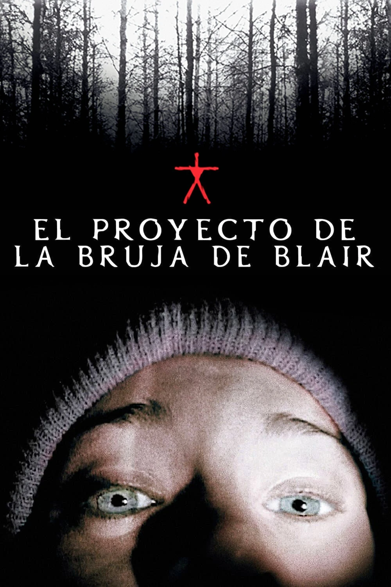

Descripción
En 1994, tres estudiantes de cine desaparecieron en los bosques de Maryland mientras filmaban un documental sobre una leyenda local conocida como "La Bruja de Blair". Un año después, se encontró la cámara que contenía las aterradoras grabaciones de su experiencia.
Ficha Técnica
- Directores: Daniel Myrick, Eduardo Sánchez
- Guionistas: Daniel Myrick, Eduardo Sánchez
- Reparto: Heather Donahue, Michael C. Williams, Joshua Leonard
- Género: Terror, Suspenso
- Año de estreno: 1999